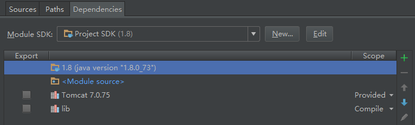

Tag:
IntelliJ IDEA 笔记
作死的又改了tomcat和java版本，新装的eclipse怎么都没配置好，导入原来的工程一直没有编译成功，好吧，我承认我是没有耐心去找问题又是出在哪里，决定换个Java IDE用用得了！听人说 IDEA挺好的，加上我前端用的也是JetBrains 的 Webstorm，界面倒很是熟悉的，想来上手也不慢。边用边记录着，省着我下次重装系统或软件时又需要回忆着设置各种选项。
创建 Web 项目
1、File -> New Project
设置好自己的tomcat和java安装目录，修改Project location，这样工程可以建好了。
在WEB-INF目录下再创建classes和lib两个目录。
2、修改 Project Structure
File -> Project Structure 窗口中，点击 Modules -> 切换到 Paths 选项卡 -> 勾选 “Use module compile output path”，将 “Output path” 和 “Test output path” 都改为之前创建的classes目录。
切换到 Dependencies 选项卡 -> 点击右边的“+”，选择 “JARs or directories”
ok之后，选择文件类型为 Jar Directory。至于为什么要像前面那么干还是很容易理解的，就不解释了~
最后，将已有的项目文件和代码依次复制过来，启动tomcat就都ok了~感觉的确比eclipse好用……
最新评论.
From: Reply to bug
要不你以为你是什么……
From: bug
原来我是个人！
From: nature's prophet
确实比eclipse好用 就连android studio也改成intellij framework了 更加简洁好用的界面和完整的提示信息